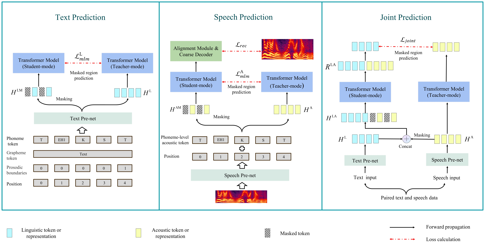
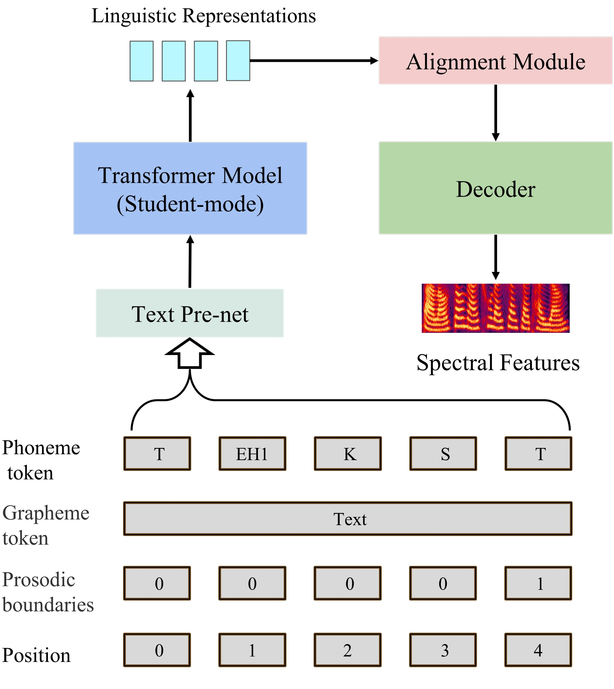

Audio samples from "TEAR: A Cross-modal Pre-trained Text Encoder Enhanced by Acoustic Representations for Speech Synthesis "
Abstract
Text encoders play an important role in text-to-speech (TTS) by analyzing text input and converting it into linguistic representations. In order to generate expressive speech from text, pre-training text encoders on large amounts of data has recently become a solution to generate richer and more efficient linguistic representations. However, existing pre-trained text encoders only use the self-supervised target on the text data, without considering the relationship between text and speech modalities during pre-training stage. In this paper, we propose TEAR, a cross-modal pre-trained text encoder enhanced by acoustic representations used for TTS. Besides the unlabeled text data, TEAR also uses the paired text-speech data to perform cross-modal pre-training, where the acoustic representations are used to bring additional prosody knowledge to the linguistic representation. This enables TEAR to better adapt to downstream TTS tasks compared to text-only pre-trained text encoders. TEAR was pre-trained on 130 million Chinese and English unlabeled sentences, as well as 740,000 Chinese text-speech pairs. The fine-tuning experiments on TTS tasks indicate that the proposed TEAR can encode more efficient and complete linguistic representations compared to the text-only pre-trained encoders, leading to the generation of more natural and expressive speech.


| TEAR | Phn Enc | PnG Enc | Data2vec-text Enc | GT-mel | |
|---|---|---|---|---|---|
| 1: 但是，北大的刘德寰教授说，这个理论在中国的某些市场上不见得适用哒。 | |||||
| 2: 那说到这我就明白啦，为什么去工作又叫上班，就是把自己纳入到某种预先排列好的秩序里面呀。 | |||||
| 3: 但是正好相反啊，她到今天不过两千年，而距离大金字塔两千五百年。 | |||||
| 4: 文章里没有故事知识和道理，文字通常会给我们的这些东西它全没有。 | |||||
| 5: 对，思考的结果也许夹杂了更多的偏见独断蛮不讲理呀。 | |||||
| TEAR | Phn Enc | PnG Enc | Data2vec-text Enc | GT-mel | |
|---|---|---|---|---|---|
| 1: 眼神古怪地撇了一眼徐凤年，就跟看白痴一般。 | |||||
| 2: 一拈就夺了过去，随手一抛，斜割去大片芭蕉。 | |||||
| 3: 光头汉子，从盘子里扯出一块肉，笑嘻嘻道。 | |||||
| 4: 张晓宇能这么对她，已经让她很高兴，如果换了别的人，昊羽嫣真不知道会发生什么事。 | |||||
| 5: 咔嚓，下方倒塌的墙壁突兀地裂开一道缝隙，一抹森冷的刀芒穿刺而出，袭向几乎近在咫尺的公羊奎。 | |||||
| TEAR | Data2vec-text Enc | GT-mel | |||
|---|---|---|---|---|---|
| 1: Oh well, nobody is perfect right, he is still a really good friend. | |||||
| 2: The apartment is really a problem. It's hard to fine someone to look after it. What do you plan to do? | |||||
| 3: How are your students doing? | |||||
| 4: So, what do you really enjoy doing? | |||||
| 5: Yes,we went to the top of the hill in the park, and looked out over the sea. | |||||